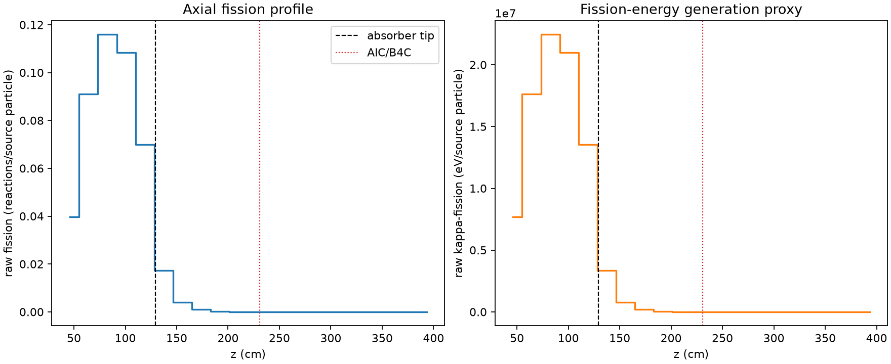
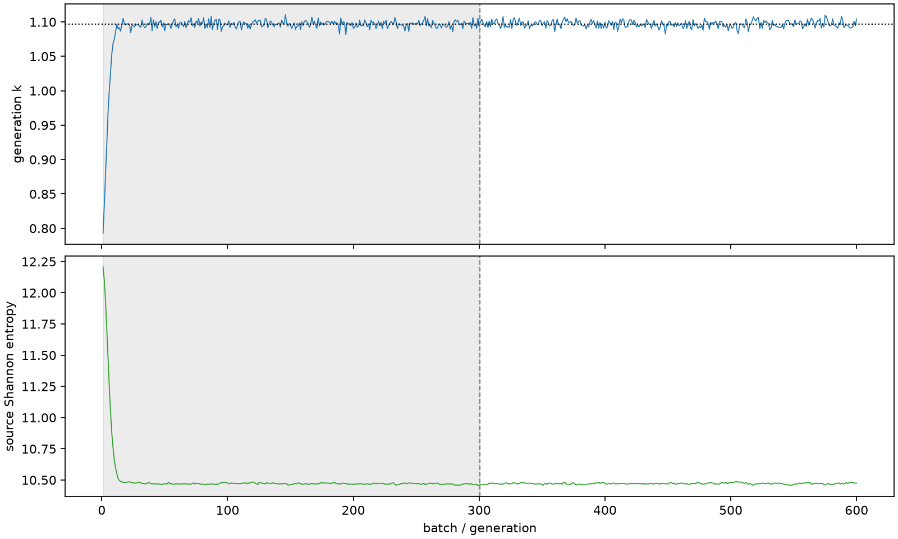

| field | value |
|---|---|
| experiment | V2-STAGE_128_OGRENCI_01-0002 |
| k | 1.0969557097396185 |
| MC standard error | 0.00020869182475435975 |
| seconds | 1026.539606913997 |
| acceptance | not_assessed |
| convergence | review_required |
Completed is output integrity only; physical and statistical review required. Zero tallies do not prove zero production or zero uncertainty.
| diagnostic | value |
|---|---|
| geometric fuel voxels | 5280 |
| zero fission tally voxels | 1780 |
| low signal fuel voxels | 2722 |
| low signal fission share | 7.388334937049167e-05 |
| low signal kappa share | 7.391692919878915e-05 |
| important fission share | 0.9500121165673064 |
| previous filter included | 2558 |
| duration estimate s | 1562.5173488400023 |
| actual minus estimate s | -535.9777419260054 |
| fission relative MC error | statistics |
|---|---|
| all_geometric_fuel | {"voxels": 5280, "positive_mean_voxels": 3500, "zero_mean_voxels": 1780, "undefined_relative_error_voxels": 1780, "median": 0.023727518018042532, "p95": 0.973293483638194, "maximum": 1.0000000000000002} |
| low_signal | {"voxels": 2722, "positive_mean_voxels": 942, "zero_mean_voxels": 1780, "undefined_relative_error_voxels": 1780, "median": 0.5807295407399968, "p95": 1.0, "maximum": 1.0000000000000002} |
| important_95pct | {"voxels": 1322, "positive_mean_voxels": 1322, "zero_mean_voxels": 0, "undefined_relative_error_voxels": 0, "median": 0.005060429792302823, "p95": 0.007934913133010263, "maximum": 0.01267859943411113} |
| outside_previous_filter | {"voxels": 2722, "positive_mean_voxels": 942, "zero_mean_voxels": 1780, "undefined_relative_error_voxels": 1780, "median": 0.5807295407399968, "p95": 1.0, "maximum": 1.0000000000000002} |
| kappa_fission relative MC error | statistics |
|---|---|
| all_geometric_fuel | {"voxels": 5280, "positive_mean_voxels": 3500, "zero_mean_voxels": 1780, "undefined_relative_error_voxels": 1780, "median": 0.02368590052317259, "p95": 0.9728350047585719, "maximum": 1.0000000000000002} |
| low_signal | {"voxels": 2722, "positive_mean_voxels": 942, "zero_mean_voxels": 1780, "undefined_relative_error_voxels": 1780, "median": 0.580899150404913, "p95": 1.0, "maximum": 1.0000000000000002} |
| important_95pct | {"voxels": 1322, "positive_mean_voxels": 1322, "zero_mean_voxels": 0, "undefined_relative_error_voxels": 0, "median": 0.0050541659920897266, "p95": 0.00792424394207668, "maximum": 0.012661431070889698} |
| outside_previous_filter | {"voxels": 2722, "positive_mean_voxels": 942, "zero_mean_voxels": 1780, "undefined_relative_error_voxels": 1780, "median": 0.580899150404913, "p95": 1.0, "maximum": 1.0000000000000002} |
| axial bin | fission share | kappa-fission share |
|---|---|---|
| 1 | 0.08873859897794659 | 0.08874132373618106 |
| 2 | 0.20362834563025195 | 0.2036233117763906 |
| 3 | 0.25893293438914555 | 0.2589266971451066 |
| 4 | 0.2421277041675403 | 0.24212130495853176 |
| 5 | 0.15621005016795808 | 0.1562072622998759 |
| 6 | 0.03885850505616678 | 0.03887124472848229 |
| 7 | 0.008729422321531387 | 0.00873319537089389 |
| 8 | 0.0021088861396897332 | 0.00210978728881473 |
| 9 | 0.0005080010420216289 | 0.000508240637961453 |
| 10 | 0.00012066331913472295 | 0.00012072547349729002 |
| 11 | 2.737522452978302e-05 | 2.7390551757484798e-05 |
| 12 | 8.131698665469878e-06 | 8.133362568175817e-06 |
| 13 | 1.201519682355435e-06 | 1.2020391755259975e-06 |
| 14 | 1.0162017852982766e-07 | 1.0171109116292038e-07 |
| 15 | 5.681917763561859e-08 | 5.6914753702427636e-08 |
| 16 | 2.1906379404289477e-08 | 2.2004918413396754e-08 |
| 17 | 0.0 | 0.0 |
| 18 | 0.0 | 0.0 |
| 19 | 0.0 | 0.0 |
| 20 | 0.0 | 0.0 |
Histories include the inactive-to-active transition at batch 300. kappa-fission approximates fission energy production, not total heat deposition.

